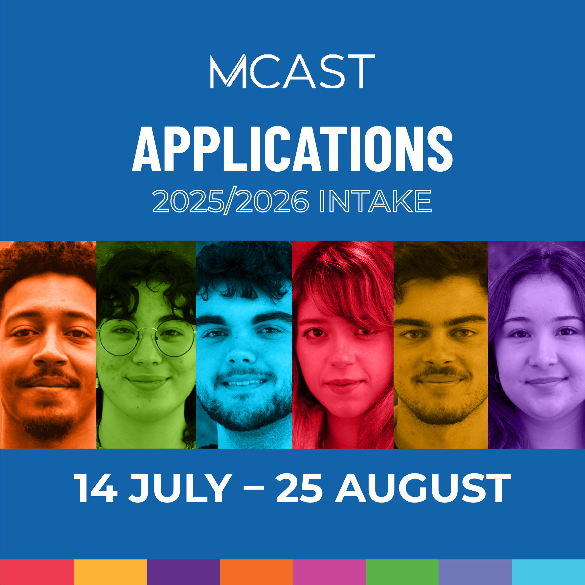

Shaping the Future of Digital Water Research, Education and Innovation On July 2nd WATERLINE organised a workshop for International Water Research Experts for in-depth consultation on policy recommendation guidelines on Digital Water Innovation Picture1

The WATERLINE project achieved another milestone with its Expert Workshop on Policy Guidelines for Digital Water Education, Research and Innovation, bringing together 25 leading researchers, educators, policy advisors, and from across Europe. Co-organised and hosted by Maria Lima Toivanen (SITES) and Jan-Hendrik Körber (Turku University of Applied Sciences), the event was a pivotal step in refining recommendations aimed at empowering Higher Education Institutions (HEIs) to drive digital transformation in the water sector. The workshop focused on validating a set of clustered policy recommendations that emerged from: • extensive research on digital water innovation ecosystems; • evaluation of capacity-building activities; • evaluation of virtual learning tools developed by WATERLINE. These clusters outline actionable strategies for strengthening digital water innovation ecosystems and HEIs prominent role in them, aligning with the project’s mission providing the research pillars as foundations for sustainable and technologically advanced water management. The Four Clusters of Policy Guidelines: 1. Network of Emulative Centres – Proposes expanding HEI-led digital learning hubs to promote innovation and cross-border collaboration. 2. Digital Water HEI Alliance Consolidation – Focuses on formalising alliances, joint academic and professional degrees, and innovation activities to bridge academia and industry. 3. Educational Policies and Curricula – Recommends updating policies to embed digital water content in curricula, empower educators, and foster interdisciplinary learning. 4. Regional Specialisation – Advocates aligning HEI activities with regional innovation policies to address local needs and leverage regional innovation potential.

Maria Lima Toivanen, innovation ecosystems expert and workshop organiser expressed her satisfaction on the outcomes of the workshop, describing it as a “a showcase of immense value that brought together diverse perspectives from international digital water experts to shape policy frameworks supporting collaboration, innovation, and sustainability. Her view also complemented by Jan-Hendrik, senior advisor and workshop co-organiser, who stated that “insights from the experts who participated in this workshop ensure that the guidelines proposed by WATERLINE are not only visionary but also grounded in practical realities”. This International workshop had at its core WATERLINE’s commitment to Quadruple Helix collaboration, bringing together academia, industry, policymakers, and civil society and leveraging Smart Specialisation Strategies to ensure regional relevance and impact.
The policy guidelines discussed with the experts will be analysed to inform a Report “Policy Exploitation and Guideline Recommendations for Embedding Digital Water Technologies in Education”, to be published by WATERLINE, to serve as foundation for actionable policy briefings at national and EU levels. Through these guidelines, WATERLINE reinforces its role in building human capital and technological capacity to lead Europe’s water sector into a digital future.
The Malta College of Arts, Science, and Technology (MCAST) proudly celebrates the remarkable participation and achievements of its BA (Hons.) in Fashion students at Malta Fashion Week 2025. Seven talented students took to the national stage, presenting bold, original and thought-provoking collections that captured the attention of industry experts, fashion enthusiasts, and media alike. This prestigious event provided a valuable platform for the students to demonstrate their creativity, technical skills and innovative approach to fashion design. Their collections stood out for their craftsmanship, strong visual storytelling and commitment to sustainable practices—values that reflect the ethos of MCAST’s Institute for the Creative Arts. Among the highlights of the week were the outstanding recognitions awarded to two of our students: Jethro Schembri was named Best Upcoming Fashion Designer, impressing the judges with a visionary collection that pushed the boundaries of contemporary design.
Aishling Guidera won Best Upcoming Textile Designer, showcasing exceptional creativity in fabric manipulation, texture and sustainable material use. These accolades are a testament to the high standards and innovation fostered within MCAST’s fashion programmes. MCAST remains dedicated to nurturing Malta’s next generation of fashion leaders. The students’ success at Malta Fashion Week not only marks a significant milestone in their creative journey but also reinforces the institution’s role in shaping the future of the local and international fashion landscape. For more information about MCAST’s fashion and creative arts programmes, please visit mcast.edu.mt.

Applications for full-time courses at the Malta College of Arts, Science, and Technology (MCAST) open on 14 July and will remain open until 25 August 2025. With over 200 courses available and strong interest expected, students are being encouraged to apply as early as possible to secure a place on their preferred programme. The latest prospectus for the 2025–2026 academic year offers a wide range of study options across various disciplines, including Engineering, Applied Science, Information Technology, Business, Health and Social Care, and Creative Arts. It also features new additions that reflect the College’s commitment to providing education that matches the needs of today’s industries and tomorrow’s workforce. This year’s offer also includes courses at the new Institute for the Trades, focused on both traditional craftsmanship and modern techniques. The Institute will offer practical training in stonework, metalwork, tile-laying, textiles, and precious metals, while also introducing students to up-to-date methods like 3D printing. The aim is to combine heritage skills with new technology and create real career options for young people interested in skilled trades. MCAST Principal and CEO Stephen Vella said the new Institute is a key step in helping Malta prepare a workforce that is skilled, adaptable, and ready for the future. “We want to make vocational training attractive and future-focused. With the Institute for the Trades, students will gain real, work-based experience that builds both traditional know-how and modern problem-solving skills. These are skills that employers value and communities need.” Other highlights of this year’s offer include Malta’s first Master’s in Veterinary Studies, launched last year in collaboration with the Universitat Autònoma de Barcelona. Students can now train locally as veterinary professionals. The Bachelor’s Degree in Social Work continues to grow, and the sports portfolio now includes new coaching degrees in football, swimming, and child development. MCAST courses are offered at all levels, from introductory certificates to Bachelor’s and Master’s degrees, as well as a Professional Research Doctorate. Twenty-four courses are also available at the Gozo campus. Prospective students are urged to download the prospectus from mcast.edu.mt and to submit their applications early. Those unsure about their next step can get free advice from MCAST’s Career Guidance team by emailing careerguidance@mcast.edu.mt.
